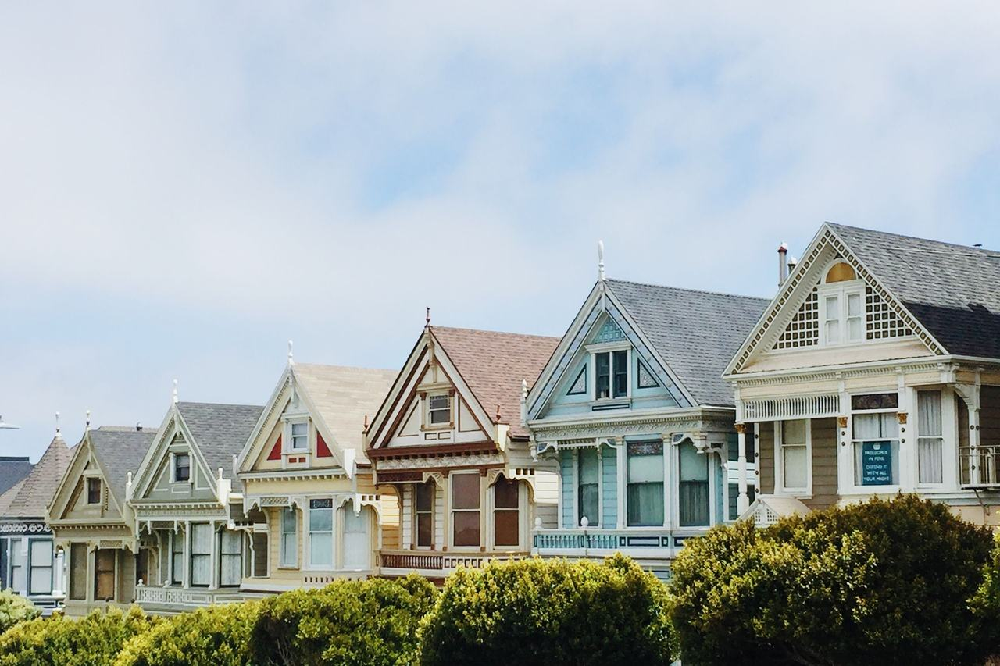

Western Addition
A large central district west of Van Ness that largely survived the 1906 fire, mixing Victorian flats with 20th-century apartment buildings.

Map
Named buildings and landmarks
-
1
-
2
-
3

-
4
-
5
-
6

-
7
-
8

-
9

-
10

-
11
-
12

Also here: Margaret Hayward Playground Building, Grabhorn Press Building, Empress Apartments, Public Utilities Commission State Office Building, Laguna Eichler Apartments, Cathedral of St. Mary of the Assumption, Friendship Village, Friendship Village, Buchanan Park Apartments, Bethel African Methodist Episcopal Church, International Longshoremen's and Warehousemen's Union Headquarters, Sunhouse Complex, Divisadero Heights housing development, Opera Plaza, Ella Hill Hutch Community Center.
Streets documented so far
- Beideman Street
1 building, built 1900. - Birch Street
1 building, built 1904; 1 in the Hayes Valley Residential Historic District. - Broderick Street
1 building, built 1913. - Buchanan Street
1 building, built 1935. - Bush Street
5 buildings, built 1916–1930. - California Street
1 building, built 1921. - Cleary Court
1 building, built 1963. - Divisadero Street
1 building, built 1914. - Eddy Street
2 buildings, built 1900–1996. - Ellis Street
2 buildings, built 1900. - Fillmore Street
1 building, built 1911. - Franklin Street
1 building, built 1921. - Friendship Court
1 building, built 1971. - Fulton Street
1 building, built 1900; 1 in the NOPA Historic District. - Geary Boulevard
2 buildings, built 1900. - Golden Gate Avenue
A 1926 apartment building named among the 1974 Patty Hearst addresses. - Gough Street
1 building, built 1968. - Laguna Street
Bethel A.M.E. Church, built in 1969 for a congregation meeting in San Francisco since the 1850s. - Mcallister Street
The Third Baptist Church complex, San Francisco Landmark No. 275. - O'Farrell Street
1 building, built 1900. - Pierce Street
1 building, built 1923; 1 in the Alamo Square Historic District. - Pine Street
1 building, built 1925. - Scott Street
2 buildings, built 1900–1956. - Steiner Street
1 building, built 1890; 1 in the Alamo Square Historic District. - Sutter Street
1 building, built 1910. - Turk Street
1 building, built 1977. - Van Ness Avenue
10 buildings, built 1900–2019. - Willow Street
1 building, built 1931.
Parks and public spaces
- Alamo Square
Neighborhood park or playground, 13.7 acres. - Beideman & O'Farrell Mini Park
Mini park, 3,920 sq ft. - Buchanan St Mall
Neighborhood park or playground, 2.0 acres. - Fillmore & Turk Mini Park
Mini park, 11,326 sq ft. - Golden Gate & Steiner Mini Park
Mini park, 5,227 sq ft. - Jefferson Square
Neighborhood park or playground, 6.4 acres. - Margaret S Hayward Playground
Neighborhood park or playground, 5.8 acres. - Raymond Kimbell Playground
Neighborhood park or playground, 6.0 acres.
Historic districts here
Adjacent neighborhoods
Japantown is cut out of these blocks around Post and Buchanan Streets. Pacific Heights rises north beyond Geary Boulevard, Lone Mountain / USF lies west past Masonic Avenue, Hayes Valley south, and the Tenderloin and Nob Hill east across Van Ness Avenue.